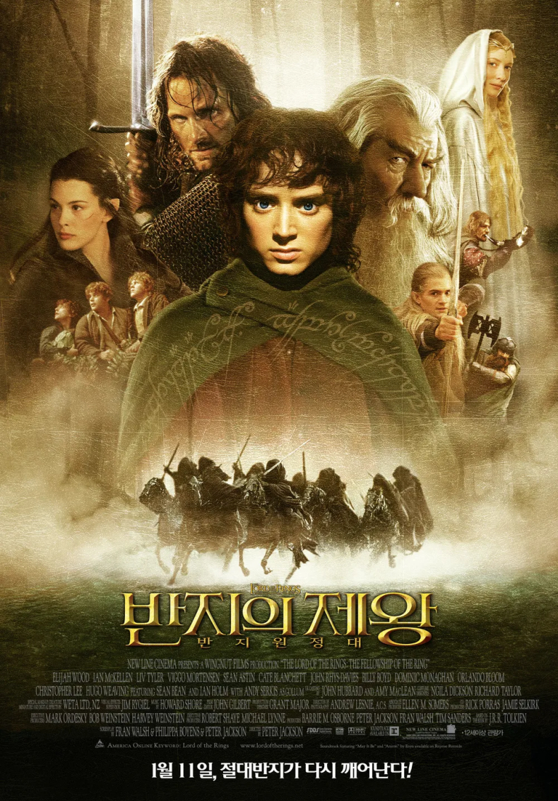
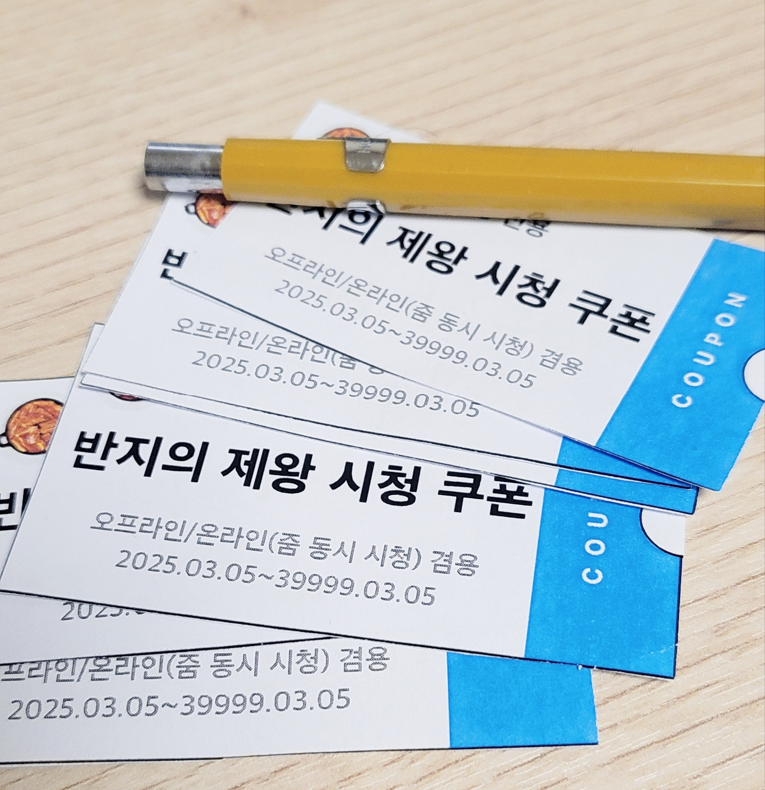
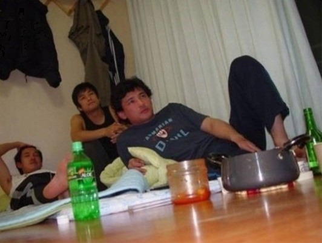

이게 대체 무슨 말이니
비가 오는 날에는 롯데타워가 사우론의 탑 같아진다는 얘기를 하던 중이었다.
동기가 물었다.
"그런데 사우론의 탑이 뭐야? 많이 들어봤는데 사실 뭔지 몰라."
"반지의 제왕에 나오는 악당 이름이야."
"반지의 제왕이 뭐야? 애니야?"
...

충격은 거기서 끝이 아니었다.
물어보니 같이 밥을 먹는 동기들 중 반지의 제왕을 본 사람은 나뿐이었다.
심지어 다른 동기는 "그거 아 윌 비 백 하는 그거 아니냐" 라고 하고 있었다.
용암에 뭔가가 빠진다는 점에서는 같은 작품.
당시 나는 반지의 제왕을 재시청하고 그 위대함에 빠져있었다.
그래서 더더욱 경악할 수밖에 없었다.
판타지 장르에 한 획을 그은 전설적인 작품이 "아 그거 엄청 옛날에 나온 작품이잖아
언니는 나이가 많아서 그런가 잘 아네" 라는 극악무도한 평가를 듣고 있다니..
애상을 부른 COOL이 뭔지 모른다고 하면 충격받던 친척들 마음이 이런 거였을까?
아무도 모르는 프랑스 예술영화였다면 정상적인 반응이었을 것이다.
하지만 이건 반지의 제왕이잖아!!
내 상식으로는 도저히 이해할 수 없는 상황이었다.
그 이후 꾸준히 반지의 제왕을 보자고 했지만
친구들은 날 오타쿠 취급만 할 뿐 아무도 관심을 주지 않았다.
실제로 오타쿠라서 더 열받았다.
그래 3부작 다 합쳐서 10시간 넘는 작품을 누가 봐주겠어…
라고 생각하고 포기하고 있을 때…
나는 매우 좋은 생일 선물을 받게 된다.
바로 반지의 제왕 시청 쿠폰이었다.
쿠폰을 준 친구 6명 중 5명이 휴학을 했다.
밥 먹을 사람 없어진 것도 슬픈데 쿠폰도 쓸 수 없어서
매우 절망적이었지만,
학교 주변에 자취하는 친구 몇 명이 남아서 어찌저찌 3명이 모였다.
쿠폰 만들어주고 본가로 돌아가 버리다니 기만이다.
먼저 반지의 제왕을 보기 위해 필요한 간식을 준비했다.
이것은 직접 만든 누가크래커이다.
대파크래커와 말랑카우를 이용하면 만들 수 있다.
라고 인터넷에 정보가 돌았는데, 마침 친구네 집에 재료가 있어서 만들 수 있었다.
진짜 그 맛이 나겠어? 했는데 진짜 맛있었다.
사실 요즘에는 보기 힘든 정통 판타지 대서사시라
진짜 재미 없으면 어쩌지? 라고 생각했는데
다들 재밌다는 평가를 내려줘서 다행이었다.
비록 새벽 2시에 끝나서 조금 졸긴 했지만…
like this mood.
항상 단발 수염남이 무슨 미남이냐고 몰매 맞았는데
영화를 보고 나서 다들 인정해줘서 기분이 좋았다.
제 1회 <반지의 제왕:반지 원정대> 감상회는 성공적으로 끝났다.
이제 개강해서 남은 이야기는 언제 볼 수 있을지 모르겠다.
그래도 이제 프로도가 어쩌구 간달프가 어쩌구 하면 이해해줄 사람이 생겨서 행복하다.
END